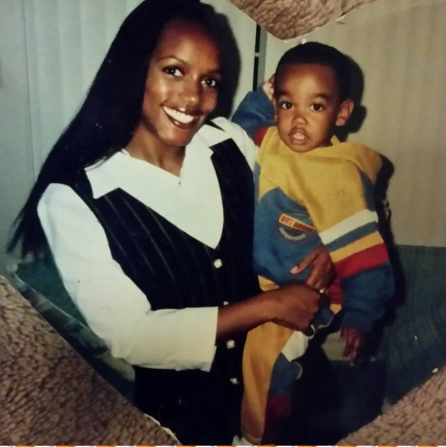

Background
Here you can learn about his background, education, and interests.
Biography
Cartier Conley the IV was born and raised in the sunniest capital of the world San Diego. His name is pronounced like the French luxury brand called Cartier which only adds to the luxurious way he presents himself. Being the fourth Cartier in his family pushes him to strive and be better while taking on the knowledge of the past Cartiers. While he has not been able to travel the world yet, it is on one of his lists that he wants to accomplish throughout his life. Another thing that he hopes to accomplish in the near future is obtaining his associate’s degree and moving on to his bachelor’s degree. He hopes to transfer to San Diego State University and apply for the Human Resources program and get a certification for Human Resources. His experiences within his life have helped him shape the importance of higher education Cartier focuses on. In his free time while he’s not focused on school, he works on creating Youtube videos that highlight his interests such as Supreme clothing and Kanye West videos. The main factors that influence Cartier’s life are his mother and his brother. His mother is a huge influence on how he can attempt a task and guidance on his future career. His brother is an inspiration in being the younger influence and playing a key role in his decision making. Cartier is a big advocate for wanting to be the best person he can be for his family, his friends, and his girlfriend. Cartier was named after his father hence making him a 4th and a long line of Cartiers.